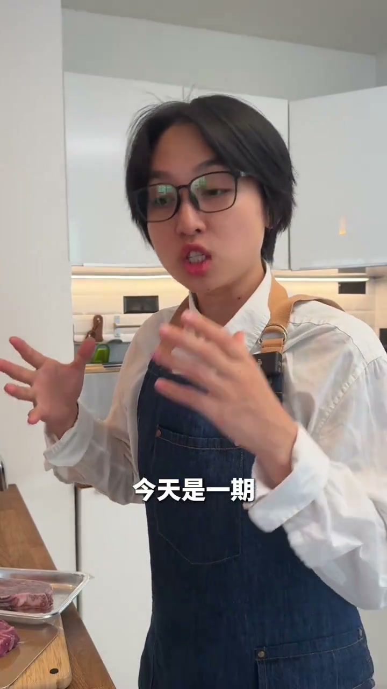
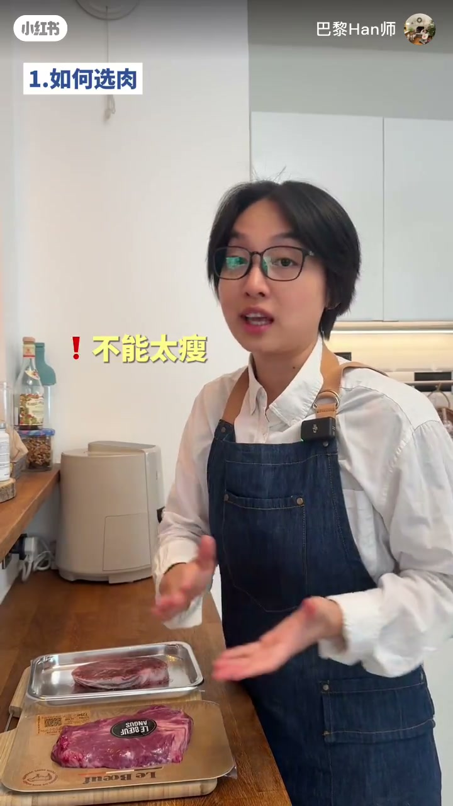
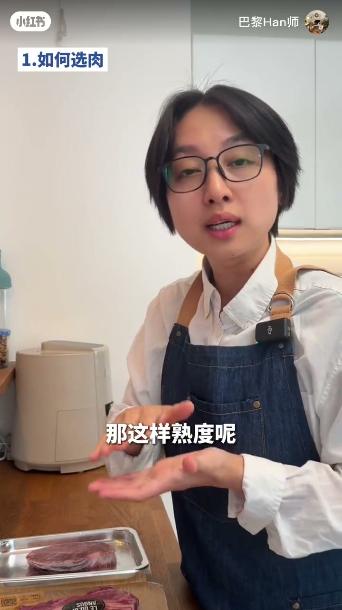
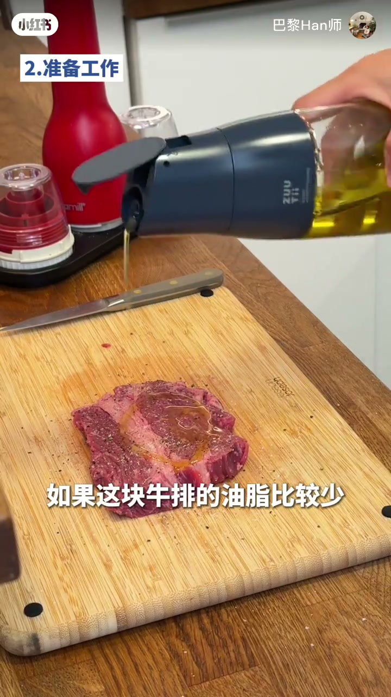
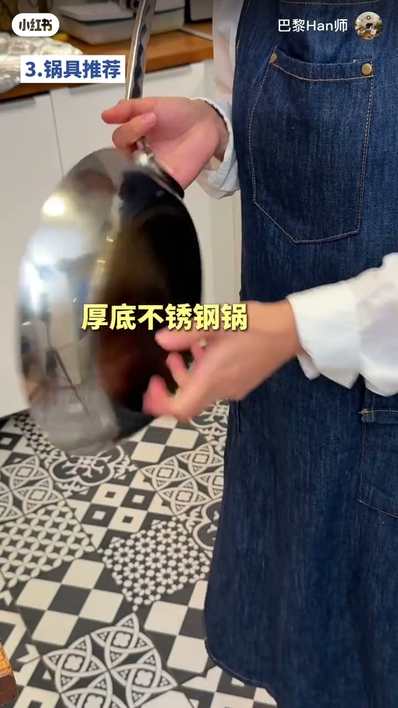
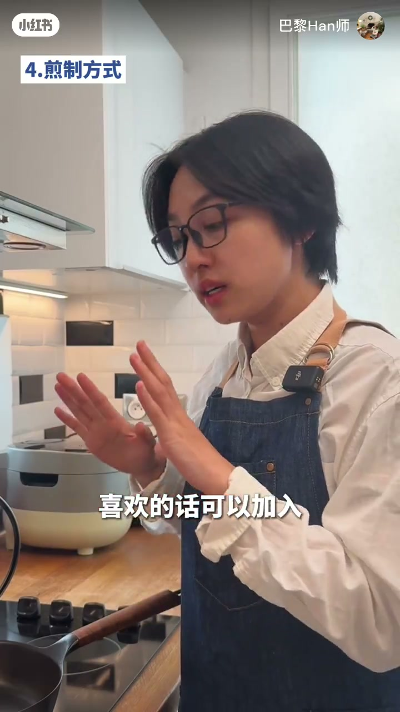

内容要点
账号「巴黎Han师」约三分多钟讲家常煎牛排。口播前半清晰：厚度均匀、回温、吸干、现撒调味、锅具与锅温。约 01:51 进入「煎」之后 Whisper 几乎停更，但画面仍有「4.煎制方式」「5.醒肉」章节条——后半以屏幕章节+画面纪实，火候秒数听不清处不臆造。
知识结构
[00:30→01:20]
预处理
厚度均匀、回温、吸干、现撒盐胡椒。
[01:20→01:51]
锅与温度
铸铁/碳钢/厚底不锈钢；锅温稳才有美拉德。
[01:51→03:10]
煎与醒肉
章节可见；ASR 缺失，详见原片。
总结
家煎成败大半在锅前：干表面+稳高温锅；后半技法跟画面学。
00:30–01:20厚度、回温与吸干
厚度不必纠结在某精确值：1.5–2.5 cm 都可以，关键是整块厚薄均匀才好控熟度。回温非常重要却常被忽略：冷冻牛排必须完全解冻；冷藏约 2 cm 的，她一般室温放置约 15 分钟。
千万不要用水洗；用厨房纸把表面水分控干——表面越干越容易快速形成漂亮焦壳（ASR「胶壳」）。然后在下锅前撒适量盐和黑胡椒：这不是提前腌制。

[00:05] 开场：在家煎完美牛排——先把选肉与预处理讲清
Opening: how to sear a great steak at home—prep first.

[00:35] 厚度 1.5–2.5cm 都可，关键是整块厚薄尽量均匀
1.5–2.5 cm is fine; even thickness matters more.

[00:50] 回温极重要：冷冻须完全解冻；约 2cm 室温约 15 分钟
Tempering is critical: thaw fully; ~2 cm steaks ~15 min at room temp.
[01:10] 切忌水洗；厨房纸吸干表面水分，才易形成漂亮焦壳
Don’t rinse; pat dry so a crust can form fast.

[01:20] 下锅前撒盐与黑胡椒——不是提前长时间腌制
Salt and pepper just before the pan—not a long cure.
01:20–01:51油脂、锅具与锅温
油脂少可适量抹橄榄油；本身很肥就不必。推荐三种锅：铸铁、碳钢、厚底不锈钢——需要较高温度，且牛排下锅后锅温不能一下子掉太多，温度稳定表面才能快速美拉德，形成焦壳色。

[01:30] 脂肪少可抹一点橄榄油；推荐铸铁/碳钢/厚底不锈钢锅
Light oil if lean; prefer cast iron, carbon steel, or heavy stainless.
[01:50] 锅温要稳：下锅后别骤降，才有美拉德反应与焦壳色
Stable pan heat enables Maillard browning and a good crust.
01:51–03:10煎制与醒肉（ASR 稀缺）
口播说到「我们来到煎这个环节」后 ASR 中断。画面可见「4.煎制方式」讲解与「5.醒肉」，并切开展示截面。具体翻面次数、每面时间、目标熟度等听不清，不在此编造——请以原片画面与章节条为准。

[02:20] 画面进入「4.煎制方式」；此后口播 ASR 断裂，细节听不清
On-screen chapter ‘4. searing’; ASR breaks afterward—details unclear.
[02:50] 「5.醒肉」后切开展示；具体火候时长以原片画面为准
Chapter ‘5. resting’ then slice; timing follows the video, not guesses.